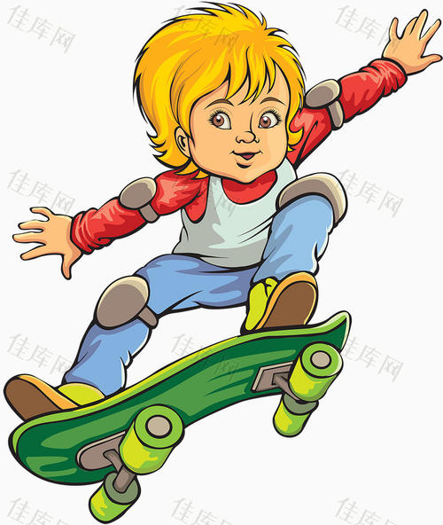
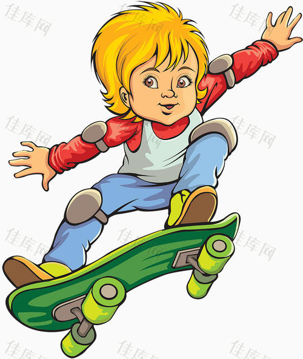

滑板Skateboard项目为地球上最“酷”的运动。
20世纪50年代末60年代初由冲浪运动演变而成的滑板运动，最早的滑板是由爱好者把双排轮滑的支架装在木板上，后来慢慢的发展成现在的滑板，在而今已成为地球上最“酷”的运动。
滑板的技巧主要包括：The AerialL（在滑杆上）、TThe Invert（在U台上）、TThe Ollie（带板起跳），这些技术可说是除了翻板之外最重要的滑板动作。
世界上两个重要的滑板国际组织：国际滑板商协会（全称：TINTERNATIONAL ASSOCIATION OF SKATEBOARD COMPANIES 简称：TIASC）以及世界杯滑板赛（全称：TWORLD CUP SKATEBOARDING 简称：WCS）。
在二十世纪五十年代末的太平洋彼岸，善于发明创造的爱迪生的后裔们把古老神州人们的幻想或多或少地变成了现实。
五十年代初美国西海岸是弄潮儿们大试身手的地方。他们使用普通木头和价格昂贵的轻木制成的冲浪板在风口浪尖上寻找乐趣。

 
